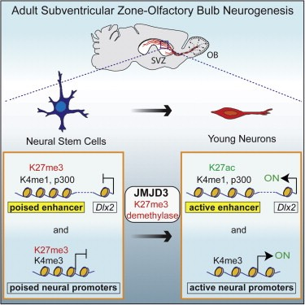
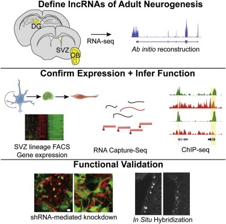

Chromatin remodeling and neural stem cell fate.
For NSCs to make neurons, daughter cells need to express certain sets of genes while repressing others. The maintenance of such lineage-specific transcriptional programs is in part regulated by chromatin structure. The Polycomb group (PcG) and trithorax group (trxG) gene products, originally described in Drosophila, repress or activate transcription, respectively, to control the specification and maintenance of cell identity. By assembling into large multiprotein complexes that modify chromatin structure, they organize the genome regionally into transcriptionally silent or active states.
While PcG member Bmi1 has been shown to be required for postnatal NSC cell self-renewal, the role of trxG genes remains unknown. Recently, we showed that Mll1 (Mixed lineage leukemia-1), a trxG member, is required for neurogenesis in the mouse postnatal brain. Mll1-deficient subventricular zone SVZ NSCs survive, proliferate, and efficiently differentiate into glial lineages; however, neuronal differentiation is severely impaired. In Mll1-deficient cells, early proneural Mash1 and gliogenic Olig2 expression is preserved, but Dlx2, a key downstream regulator of SVZ neurogenesis, is not expressed. Overexpression of Dlx2 can rescue neurogenesis in Mll1-deficient cells. Chromatin immunoprecipitation (ChIP) demonstrates that Dlx2 is a direct target of MLL1 in SVZ cells. In differentiating wild-type SVZ cells, Mash1, Olig2, and Dlx2 loci have high levels of trimethyl-histone 3 lysine 4 (H3K4me3), consistent with their transcription. In contrast, in Mll1-deficient SVZ cells, chromatin at Dlx2 is bivalently marked by both H3K4me3 and trimethyl-histone 3 lysine 27 (H3K27me3), and the Dlx2 gene fails to properly activate. These data support a model in which Mll1 is required to resolve key silenced bivalent loci in postnatal neural precursors to the actively transcribed state for the induction of neurogenesis, but not for gliogenesis. We are currently building upon this model by investigating the role of H3K27me3-specific demethylases (Jmjd3, Utx) as well as other PcG/trxG factors in neural stem cell regulation.
The epigenetics of stem cells and progenitor cells in the human brain.
About 3% of the cells in human white matter are proliferative glial progenitors that give rise to oligodendrocytes and some astrocytes. When isolated in vitro, a small percentage of these progenitors can differentiate into neurons. Adult human SVZ NSCs are also multipotential, but the epigenetic requirements for these different lineages are poorly understood. From human brain specimens obtained during resection for epilepsy, we are culturing both white matter progenitors and SVZ NSCs. Using these human cultures with gain/loss-of-function gene strategies, we will investigate the role of specific chromatin remodeling factors in self-renewal, fate specification, and lineage fidelity. In particular, we are interested in determining whether endogenous human glial progenitors or SVZ NSCs can be “programmed” for specific neural lineages by manipulating the epigenome.
Long non-coding RNAs and neural development
Long non-coding RNAs (lncRNAs), transcripts longer than 200 nt and do not appear to code for proteins, are implicated in the development of the nervous system.
Epigenetic regulation of brain tumors
Histone demethylases have been shown to regulate the pathogenesis of glioblastoma.